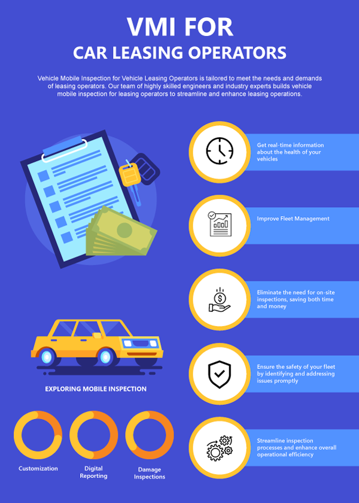

Vehicle Mobile Inspection for Vehicle Leasing Operators
Vehicle Mobile Inspection for Vehicle Leasing Operators
Vehicle Mobile Inspection for Vehicle Leasing Operators is tailored to meet the needs and demands of leasing operators. Our team of highly skilled engineers and industry experts has built vehicle mobile inspection for leasing operators to streamline and enhance leasing operations.
Benefits of Vehicle Mobile Inspection for Vehicle Leasing Operators:
Imagine having the ability to digitally inspect your entire fleet of leased vehicles over your mobile. Vehicle Mobile Inspection empowers leasing operators to review their whole fleet quickly. Utilizing this technology will enable you to:
- Improve Fleet Management: Get comprehensive reports about the damages to your vehicles, enabling instant vehicle delivery and receiving will minimize the downtime of your vehicles.
- Cut Costs: Eliminate the need for paper-based inspections, saving time and money.
- Improve Safety: Ensure the safety of your fleet by identifying and addressing issues on every trip.
- Boost Efficiency: Streamline inspection processes and enhance overall operational efficiency.

Exploring Mobile Inspection App for Leasing Operators:
To understand the power of Vehicle Mobile Inspection, let’s explore its key features:
- Damage Inspections: An essential component of vehicle mobile inspection is damage inspection, which enables leasing companies to carefully record any damages and maintain the safety of their leased cars.
- Digital Reporting: Generate detailed reports and records, aiding fleet management and decision-making.
- Customization: Tailor inspection app to suit your specific leasing requirements.
- Integration: Seamlessly integrate with your existing fleet management software. Yet we recommend using our comprehensive suite, enabling you to perform all your leasing operations under one platform.
Ensure Vehicle Safety during Leasing Operator Inspections:
For those who lease cars, safety should always come first. Vehicle Mobile Inspection helps by:
- Risk Mitigation: Identifying and recording damages instantly after every trip will mitigate the risk of potential damage loss.
- Compliance: Ensure your leased vehicles meet safety regulations and are damage-free.
- Peace of Mind: Rest easy, knowing your fleet is safe and reliable.
IMPROVE COST-EFFICIENCY WITH MOBILE INSPECTIONS
Beyond safety and efficiency, Vehicle Mobile Inspection delivers significant cost savings:
- Lower Staff Costs: Fewer staff for vehicle inspection means lower staff expenses.
- Billable Damages: Document any damage at every trip and charge the customer accordingly.
- Enhanced Productivity: Spend less time on inspections and more on core operations.
Meeting Compliance Standards in Vehicle Inspections
To succeed in the car leasing industry, meeting compliance standards is non-negotiable:
- Legal Compliance: Ensure your leased vehicles comply with legal requirements.
- Industry Regulations: Stay in line with industry-specific regulations and standards.
- Reputation Building: A compliant free fleet builds trust with customers and partners.
Choosing the Right Inspection Service Provider
Selecting the right inspection service provider is vital. Look for:
- Experience: A provider with a proven track record in the car leasing industry.
- Customization: Services tailored to your fleet’s unique needs.
- Reputation: Positive reviews and referrals from other leasing operators.
- Technology Integration: Compatibility with Vehicle Mobile Inspection systems.
Why Choose Us
Car leasing companies can improve safety and optimise operations while gaining a competitive edge by adopting and using Vehicle Mobile Inspection (VMI) app. Invest in the fleet management of tomorrow today and watch your leasing company prosper.